Avventure vissute dai cittadini del Regno
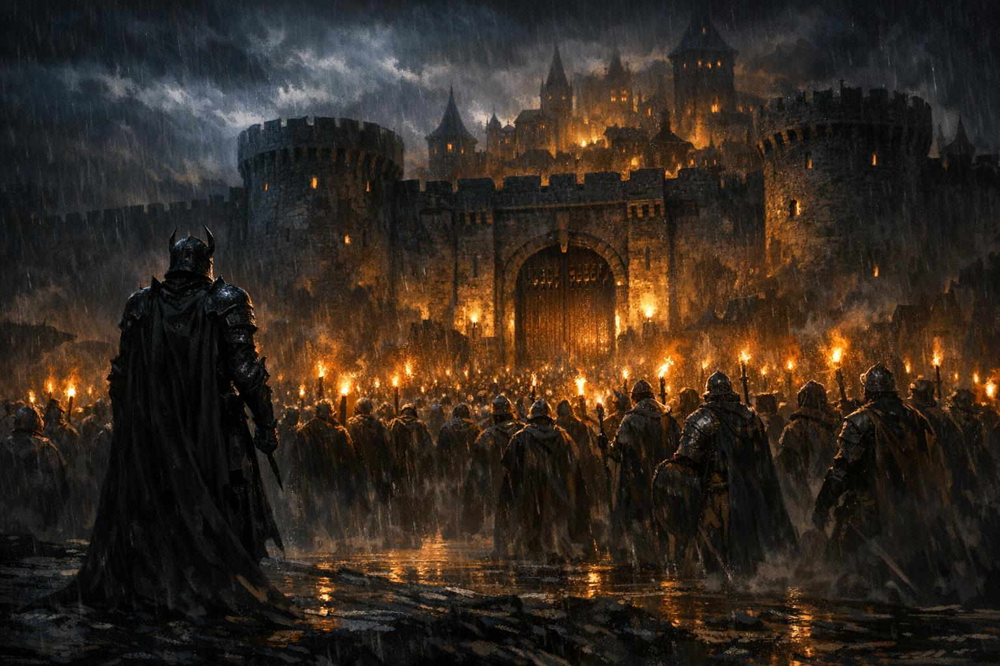
Anno 528 DE. La folla si raduna alle porte della città, i Dragoni si schierano con il popolo, e un vecchio Governatore affronta la fine del suo regno. La notte in cui Raziel Firelair ricevette il mandato di Aral.
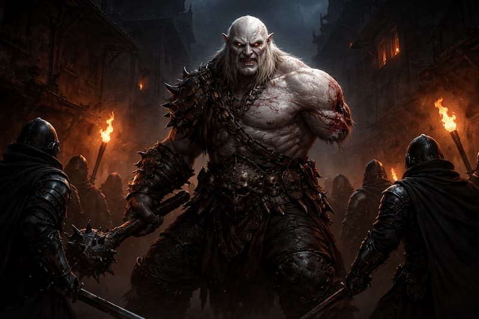
La sera sembrava tranquilla. Poi arrivò il primo urlo, gutturale e pesante. Tra le file orchesche si aprì un varco — e da quel varco uscì qualcosa che molti credevano morto.
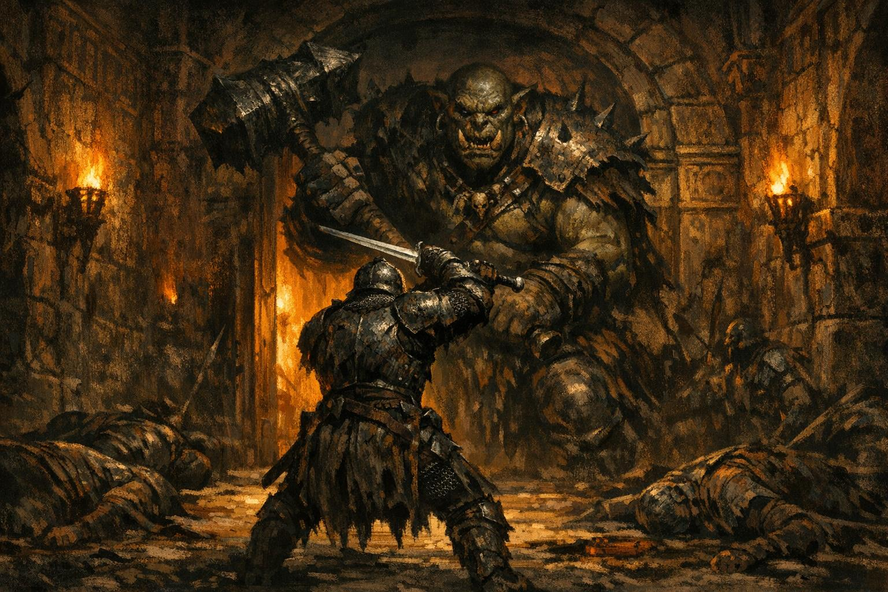
Nel quinto anno del Grande Esodo, tredici uomini si posero tra il nemico e il loro Imperatore. Nessuno di essi arretrò. Questo è il loro nome.
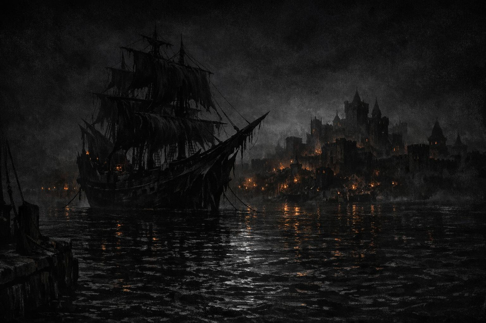
Nessuno la vide arrivare. Un vascello scuro come una ferita nell'acqua, un equipaggio che non era più uomini, e un nome che Landmar non avrebbe dimenticato.
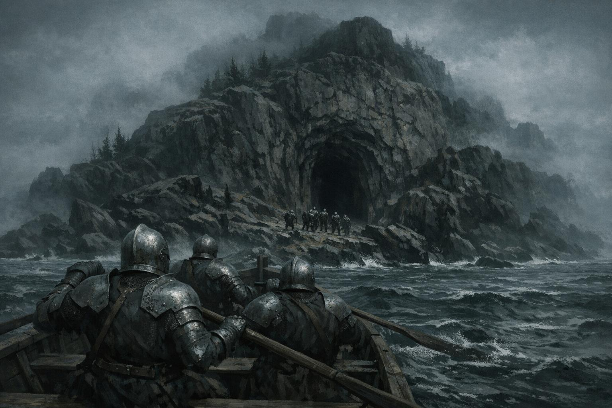
Un'isola senza nome, una miniera antica, guardiani che non appartengono più al mondo dei vivi. La flotta di Aral segue la pista di Nerabisso.
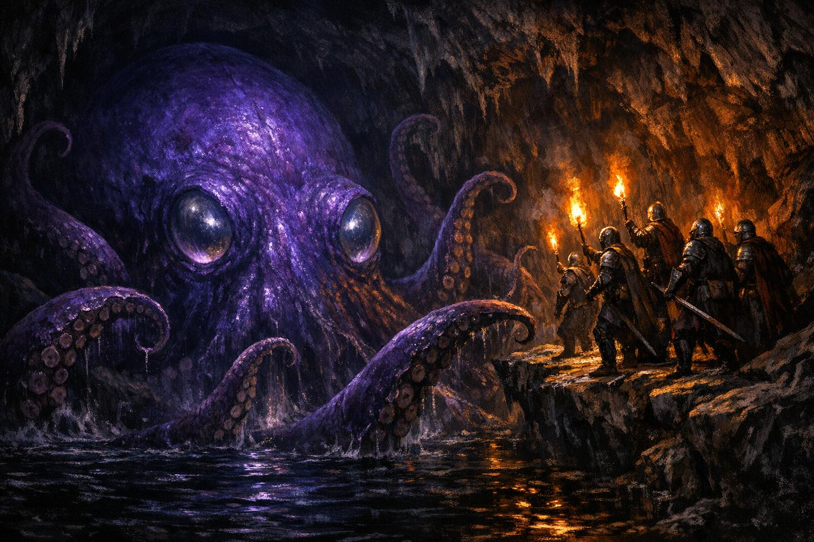
Nelle profondità allagate della miniera qualcosa di antico attende nell'oscurità. E dalla melma del fondo emerge una mappa che indica la prossima tappa.
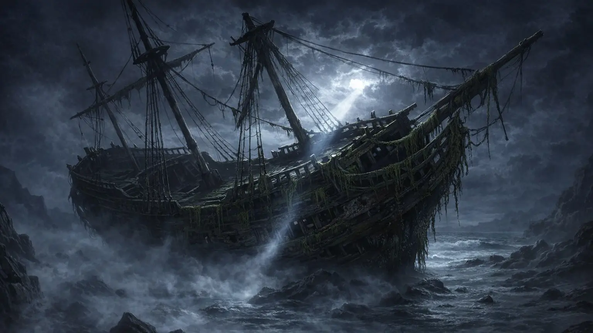
Un relitto nei Vecchi Moli. Corsari, botole nascoste e il temibile Iankul l'Artigliere — un capitano pirata segnato dalle battaglie, armato di una picca di mithril e di un'invulnerabilità quasi soprannaturale.
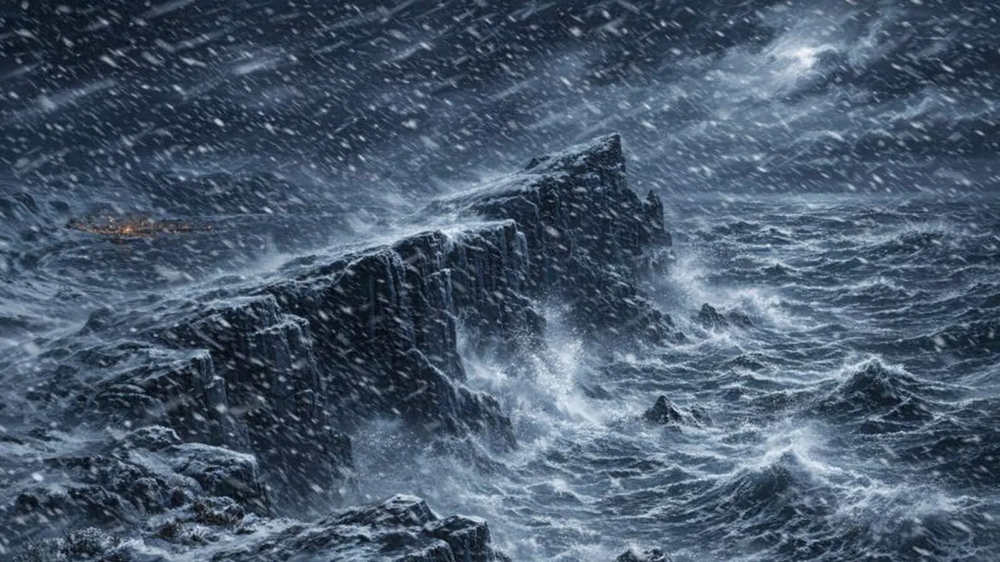
All'estremo nord di Rasserim, tra ghiaccio e vento, il gruppo risale le tracce di Nortumal il Nostromo. Una grotta macabra, trappole nascoste e un uomo che sembra non voler morire.
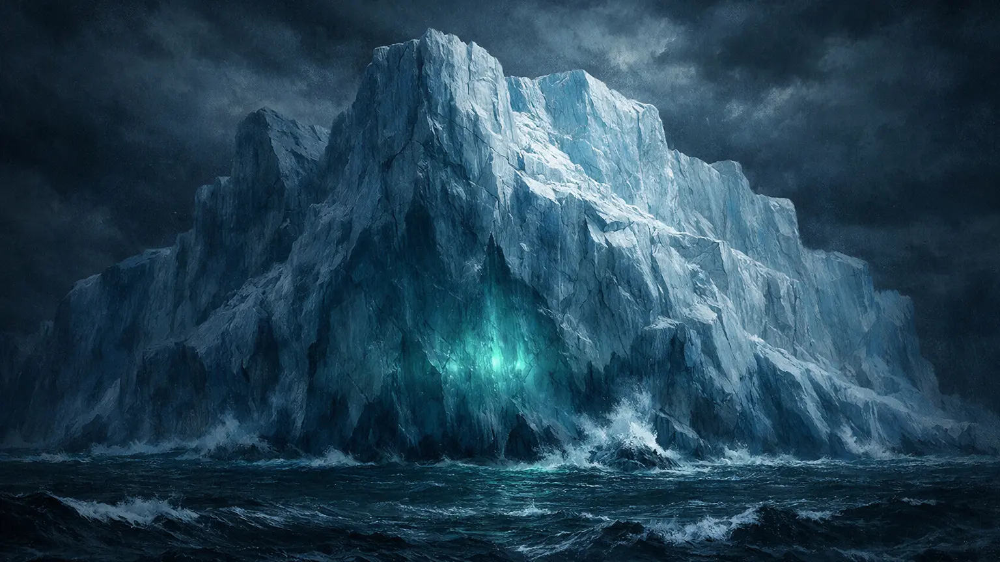
Un iceberg che nasconde un lago sotterraneo, creature delle profondità e un arsenale segreto. La ciurma della Gloria Imperiale scende nel buio e non tutti risalgono uguali.
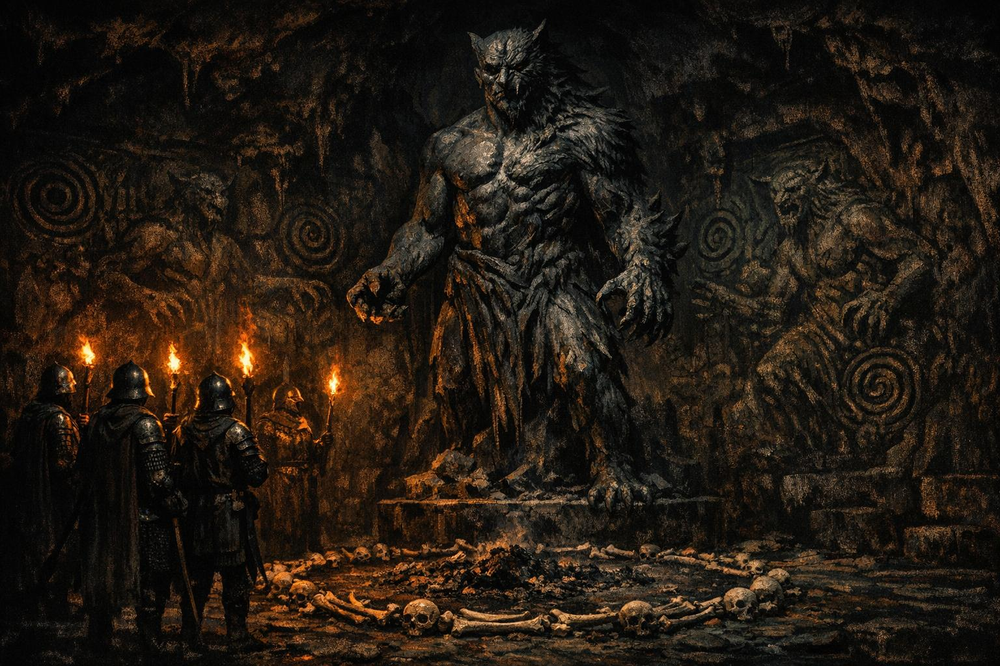
Mar Igmar puzza di secoli. Nei corridoi del livello inferiore, qualcosa aspetta — qualcosa che non è mai morto davvero. Il nome di Kimrol Afassian inciso nella pietra.
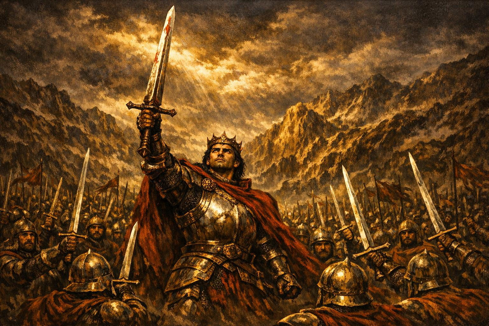
La battaglia che portò la pace all'Emer, il tradimento nella notte e la scomparsa di un re. L'inizio di una leggenda che i secoli non hanno spento.
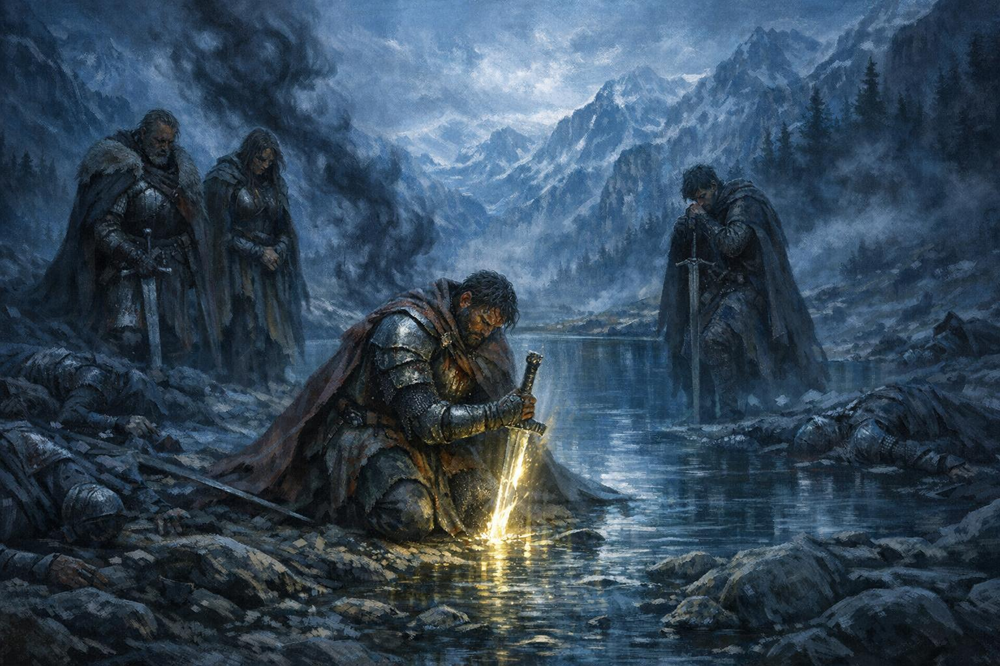
La cerca disperata di Dian Cet e dei suoi compagni, la battaglia finale al Lago di Cristallo e il sacrificio del re che imprigionò il Dio Oscuro per sempre.